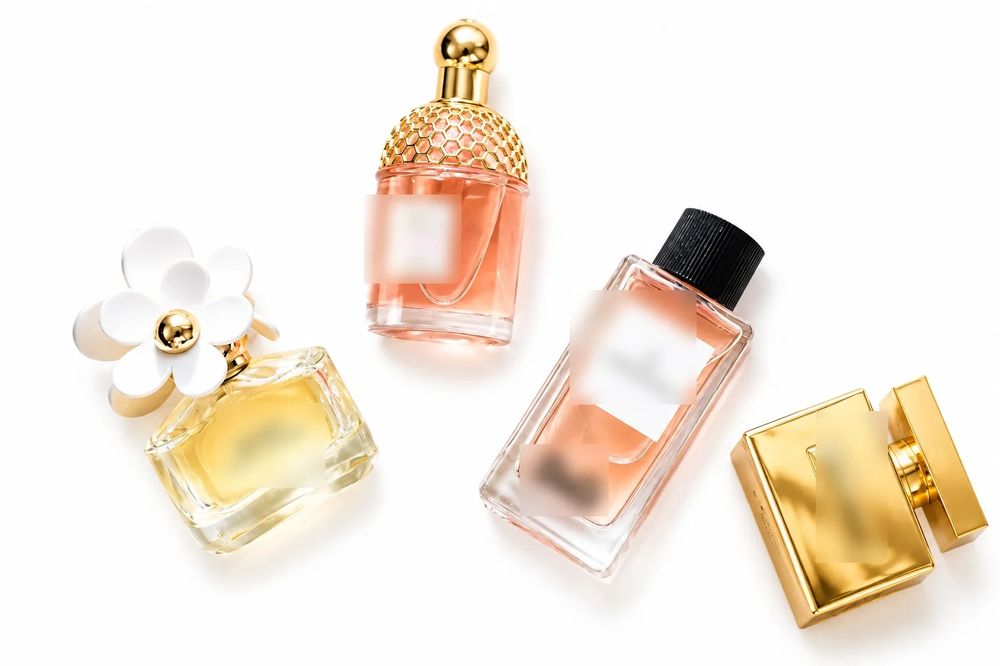
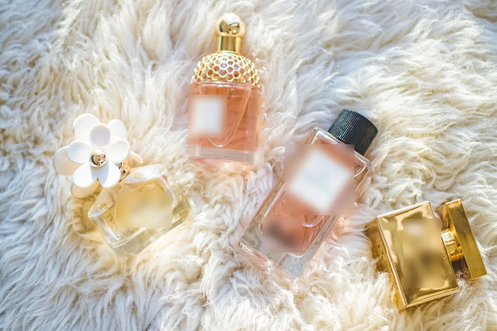
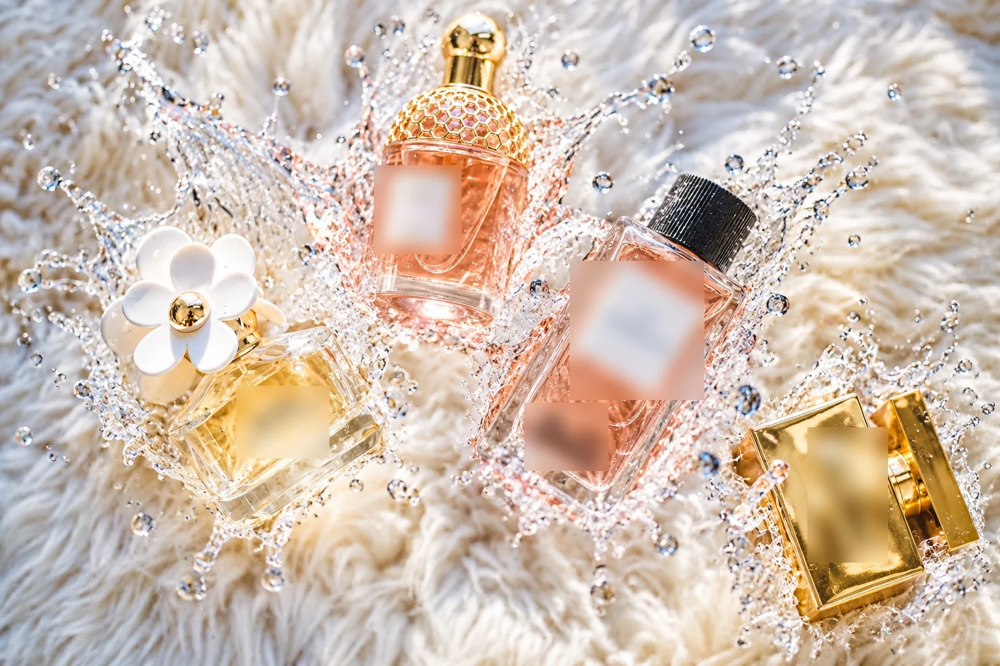
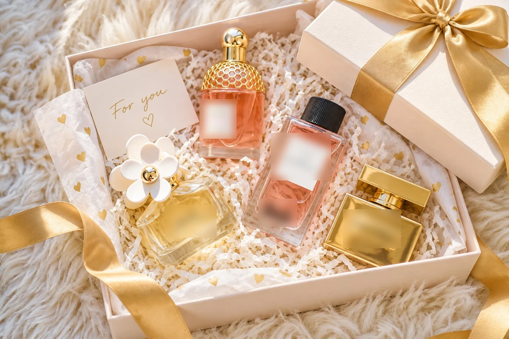

Как собрать словарь для товарных кадров
Белый фон может выглядеть идеально, пока не приблизишь этикетку. Ошибки в товарной картинке можно пропустить, если не сверить мелкие детали с исходником
Слеш здесь работает как твоя короткая подпись к длинному рекламному промпту. ChatGPT применит её только после того, как текущий чат получит словарь и подтвердит число записей
1. Приложи исходник
Открой ChatGPT, начни новый чат для /packshot, добавь фотографию кнопкой вложения и дождись миниатюры
2. Отправь первый полный промпт
Turn the product in this photo into a clean e-commerce packshot: pure white seamless background, the product centered and filling about 70% of the frame, soft even studio light, a subtle natural shadow underneath. Keep the exact shape, colors, labels and logos. Sharp focus, 1:1.Скопируй плашку целиком, вставь под фотографией и отправь. Ниже этот промпт получит короткое имя /packshot
Результат: чат создал первую картинку, которая позже будет вызываться командой /packshot
3. Сравни результат с исходником
Увеличь исходник и результат. По очереди сверь силуэт упаковки, цвет, положение логотипа и каждую букву на этикетке. Ошибочную строку обведи инструментом выделения в ChatGPT, после двоеточия перепечатай текст с упаковки дословно и попроси остальные детали не менять; чат создаст новую версию для повторной сверки. Выделение области для точечной правки описано в справке OpenAI по изображениям
Словарь для товара и рекламы
Первый результат выше получен полным промптом без словаря. Этот блок загружает 16 коротких команд для темы «товар и рекламу»: в подтверждении должно стоять число 16. Карточку вида /имя - полный промпт ниже отправляй целиком вместе с фото; при первом запуске чат сохранит пару и сразу нарисует результат
Слеш-команды для картинок в этом чате:
1. Сообщение начинается с /команды из словаря: примени её промпт к моему фото и сразу рисуй, без вопросов.
2. Слова после команды добавляй к промпту.
3. Неизвестная команда записана как /имя - полный промпт: добавь эту пару в словарь, примени промпт к фото и сразу рисуй.
4. У неизвестной команды нет полного промпта после дефиса: ответь «Такой команды нет в словаре».
5. Сообщение «Добавь в словарь»: добавь команды, ответь «Добавлено: N, всего: M».
6. На это сообщение ответь: «Словарь принят, команд: N».
Словарь:
/packshot: Turn the product in this photo into a clean e-commerce packshot: pure white seamless background, the product centered and filling about 70% of the frame, soft even studio light, a subtle natural shadow underneath. Keep the exact shape, colors, labels and logos. Sharp focus, 1:1.
/lifestyle: Show the product from this photo being used in a real everyday scene that fits what it is, in a bright modern home or street setting, with a person's hands or a person in soft focus. Keep the product exactly as it is. Natural window light, lifestyle photography, shallow depth of field.
/flatlay: Create a top-down flat lay with the product from this photo in the center and 6-8 matching props arranged neatly around it on a textured surface. Keep the product exactly as it is. Soft daylight, balanced composition, color palette taken from the product, 1:1.
/levitate: Make the product from this photo levitate in mid-air against a clean gradient background, with its ingredients, parts or related small objects floating around it. Keep the product exactly as it is. Dynamic but tidy composition, crisp studio light, commercial 3D-look photography.
/splash: Place the product from this photo in a dramatic liquid splash frozen in time, with droplets and waves around it in a color that suits the product. Keep the product exactly as it is and fully visible. High-speed studio photography, dark or colored background, sharp detail.
/billboard: Show the product from this photo as a large advertisement on a billboard in a busy modern city street at dusk, with people and cars below for scale. Keep the product exactly as it is on the billboard. Realistic street photography, city lights starting to glow.
/unboxing: Create an unboxing scene: two hands opening a neat branded box on a clean table, the product from this photo resting inside on soft paper. Keep the product exactly as it is. Top-down view, soft daylight, calm premium feel.
/marketplace: Design a marketplace product card from this photo: the product large on a clean light background, three short feature callouts with simple icons pointing to it, labels in Russian, modern sans-serif font, plenty of space. Keep the product exactly as it is. Vertical 3:4.
/luxury: Turn the product from this photo into a luxury advertising shot: deep black velvet background, a thin golden rim light outlining the product, soft reflections on a dark glossy surface, lots of negative space. Keep the product exactly as it is. High-end commercial photography.
/minimalad: Create a minimalist ad with the product from this photo on a single pastel background color that matches it, one long soft shadow, nothing else in the frame. Keep the product exactly as it is. Clean studio light, calm and airy, 4:5.
/podium: Place the product from this photo on a geometric podium made of stone, glass and matte shapes in a soft studio set, with a couple of plants or props in the same palette. Keep the product exactly as it is. Soft directional light, gentle shadows, product photography.
/inhand: Show the product from this photo held in one hand, close-up, against a softly blurred everyday background. Keep the product exactly as it is and the hand natural with correct fingers. Natural daylight, authentic social media photo, sharp focus on the product.
/magazine: Design a glossy magazine cover with the product from this photo as the hero: big masthead title at the top, two or three short cover lines, bold editorial layout. Keep the product exactly as it is. Studio lighting, vertical 3:4.
/seasonal: Place the product from this photo in a seasonal scene. Use the season or holiday I write after the command; if none, use winter holidays with warm lights and soft snow. Keep the product exactly as it is and the main focus. Cozy commercial photography.
/mockup: Take the logo or artwork from this photo and place it on a set of realistic mockups arranged in one image: a t-shirt, a mug, a tote bag and a phone case. Keep the artwork exactly as it is. Neutral studio background, soft light, clean product presentation.
/adcreative: Turn the product in this photo into a premium advertising poster. Keep the product's exact shape, colors, logos and details. Place it in a clean studio scene with dramatic lighting and soft reflections, generous negative space, a short bold English headline of up to 4 words that fits the product and a small tagline. Commercial magazine photography, sharp focus, 4:5.Результат: чат ответил, что словарь принят. После этого приложи исходник и напиши /packshot первой строкой
Как понять, что команда сработала
Число в подтверждении должно совпасть с числом записей в блоке. После /packshot отдельно сравни силуэт упаковки, цвет и расположение логотипа; каждую надпись переноси в рекламу только после посимвольной сверки с исходником
Карточка /purewhite - clean white background ниже устанавливает себя при первом запуске. Копируй строку целиком; дальше короткое имя уже работает в этом чате
Пробы было/стало
Наши пробы: фото + промпт целиком, одна попытка. Дополнительных уточнений и правок результата не было. Здесь проверяем тему «товар и рекламу»
Товар на белом фоне
/purewhite - clean white background


Исходник: Pexels №965989, Pexels License. Товарная версия создана генератором изображений
Фактурный фон стал белым, четыре флакона остались узнаваемыми. Контуры и надписи перерисованы, поэтому макет нельзя считать точной предметной фотографией
Всплеск в воздухе
/liquidfreeze - splash frozen midair


Исходник: Pexels №965989, Pexels License. Товарная версия создана генератором изображений
Вокруг флаконов появились прозрачные брызги. Фон и расположение похожи на исходник, но отражения и мелкий текст изменились
Подарочная коробка
/giftready - open gift box


Исходник: Pexels №965989, Pexels License. Товарная версия создана генератором изображений
Появились открытая коробка, бумажный наполнитель, ленты и записка. Эти детали выбрала модель. Флаконы изменили расположение, этикетки нужно сверить с оригиналом
Где хранить словарь
Один закреплённый чат подходит для постоянной линейки товаров. Новый чат полезнее, когда меняется бренд или предмет: так прошлые упаковки, цвета и реквизит не смешиваются с новой съёмкой
| Задача | Решение |
|---|---|
| Одна повторяющаяся серия | Закрепи чат со словарём и возвращайся в него |
| Чистый контекст для нового исходника | Создай новый чат и вставь тематический блок заново |
| Словарь нужен в нескольких чатах проекта | Перенеси инструкции в настройки проекта и проверь первую команду на тестовом фото |
Что ломается и что делать
Ошибка видна по меню вместо /packshot, тексту вместо картинки или изменённым деталям. Найди свой случай в таблице и повтори шаг на исходном файле
| Что видишь | Почему | Что сделать |
|---|---|---|
| Команда открыла меню | Слеш вызвал интерфейс ChatGPT | Продолжай печатать имя. При совпадении с пунктом меню переименуй команду в словаре |
| Логотип или мелкий текст искажён | Изображение создано заново | Используй результат как концепт и верни точную маркировку в редакторе |
| В карточке неверные преимущества | Модель придумала выноски | Передай точные формулировки после команды и проверь каждую строку |
| Появился товар из прошлой задачи | Контекст чата смешал изображения | Открой чистый чат, вставь товарный словарь и загрузи нужный исходник |
Фото товара
24 промпта по теме «товар и рекламу». Читай перевод и копируй запрос с нужным эффектом
/purewhite - clean white backgroundчистый белый фон
/inhandreal - product held in handтовар в руке
/allcolors - every color in rowвсе расцветки в ряд
/floatnoline - floating without supportтовар парит без опоры
/bundlepack - full matching setполный набор в одном стиле
/nextobject - beside item for scaleрядом предмет для сравнения размера
/liquidfreeze - splash frozen midairвсплеск жидкости застыл в воздухе
/deviceframe - inside device mockupкартинка в макете экрана устройства
/shelfrow - retail shelf placementтовар на полке магазина
/handoutshot - passed hand to handтовар передают из рук в руки
/giftready - open gift boxоткрытая подарочная коробка
/travelcase - packed in travel bagтовар уложен в дорожную сумку
/openbox - freshly opened boxтолько что открытая коробка
/closebox - sealed upright boxзакрытая коробка стоит вертикально
/stackedset - neat stacked unitsаккуратная стопка одинаковых товаров
/rotatingview - six product anglesшесть ракурсов товара
/macrotexture - material texture close upфактура материала крупным планом
/coloredbg - matching solid backdropоднотонный фон в цвет товара
/lifestylehold - real daily useтовар в повседневном использовании
/outdooruse - used outside naturallyестественное использование на улице
/wearingit - worn as intendedвещь надета по назначению
/demoaction - mid use momentтовар в момент использования
/cleanupshot - clean and polishedчистый и отполированный товар
/packedtogo - ready to shipтовар подготовлен к отправке
Реклама и печатные материалы
/handsonly - only hands using itтолько руки, которые используют товар
/founderpic - founder in workshopоснователь в мастерской
/storycover - book cover with spineобложка книги с корешком
/albumsquare - square album coverквадратная обложка альбома
/roadsign - real outdoor billboardнастоящий рекламный щит на улице
/paperprint - old newspaper printпечать как в старой газете
/bigquote - clean quote cardаккуратная карточка с цитатой
/timemarks - timeline with milestonesлиния времени с важными событиями
/shelftalker - clip on shelf signценник или табличка на краю полки
/instoread - store ad displayрекламная стойка в магазине
/pointofsale - card at registerкарточка у кассы
/windowdisplay - shop window displayоформленная витрина магазина
/tabletent - folded table cardсложенная настольная карточка
/menuboard - restaurant menu boardдоска с меню ресторана
/receiptprint - thermal receipt stripполоска чека из термопринтера
/couponcut - tear off couponкупон с отрывным краем
/catalogspread - two page catalogразворот каталога на две страницы
/directmail - mailable postcardоткрытка для почтовой рассылки
/doorhanger - doorknob flyerлистовка на дверной ручке
/stickernote - handwritten sticky noteстикер с рукописной заметкой
/businesscard2 - simple business cardпростая визитка
/badgepin - round event badgeкруглый значок мероприятия
/lanyardcard - ID card with lanyardкарточка на шнурке
/eventbanner - wide stage bannerширокий баннер над сценой
Упаковка
/bottlelabel - bottle label designэтикетка на бутылке
/canlabel - bold printed canяркая печать на банке
/candywrap - playful candy wrapperигривая обёртка конфеты
/boxprint - printed box artworkрисунок на коробке
/bagprint - paper shopping bagбумажный пакет для покупок
/giftwrap - ribbon and bowподарок с лентой и бантом
/kitbox - kit in open boxнабор в открытой коробке
/ecobox - recycled cardboard packageупаковка из переработанного картона
/perfumebottle - elegant perfume labelизящная этикетка духов
/lotionbottle - pastel lotion bottleфлакон лосьона в пастельных цветах
/pillbottle - clear medicine labelпонятная этикетка лекарства
/jarlabel - rustic jar labelэтикетка на банке в деревенском стиле
/tubepackage - squeeze tube packупаковка мягкого тюбика
/blisterpack2 - clear plastic domeпрозрачный пластиковый блистер
/clamshell - hinged clear shellпрозрачная упаковка с откидной крышкой
/pouchpack - resealable standup pouchпакет, который стоит и закрывается повторно
/sachetpack - single use sachetодноразовый пакетик
/tinpackage - hinged metal tinжестяная коробка с откидной крышкой
/boxset2 - box with compartmentsкоробка с отдельными ячейками
/crateset - small wooden crateнебольшой деревянный ящик
/basketset - woven basket setнабор в плетёной корзине
/trayset - molded tray insertвставка с выемками для предметов
/displaystand - retail display standстойка для товара в магазине
/counterdisplay - compact checkout displayнебольшая стойка у кассы
Другие подборки серии
Эта страница отвечает за «товар и рекламу», остальные подборки открываются по своим ссылкам
Проверка перед сохранением
Карточка вида /purewhite - clean white background при первом запуске сохраняет эту пару и сразу применяет промпт. Если чат отвечает «Такой команды нет в словаре», повтори строку целиком с дефисом; после этого короткого /purewhite достаточно
Памятка на один экран
Перед новым вызовом /packshot пройди эти пять строк по порядку
- Словарь ставится один раз в рабочий чат и подтверждается числом команд
- Фото товара прикладывается до вызова короткого имени
- Для другого ракурса снова прикладывай исходное фото; прошлую генерацию не используй
- Придуманные надписи и свойства товара в публикацию не идут
- Для другой марки начинай чистый чат, чтобы не смешать упаковки
Частые вопросы
Можно ли попросить русский текст на рекламном постере?
Можно. После команды напиши точную короткую фразу по-русски, затем проверь каждую букву на результате
Подойдёт ли /packshot для карточки магазина?
Кадр можно взять за основу. В актуальной справке площадки отдельно проверь размер, соотношение сторон, безопасные поля, правила фона и водяных знаков
Как собрать несколько ракурсов одного товара?
Для каждого ракурса снова прикладывай исходное фото и перечисляй признаки, которые нельзя менять
Можно ли продолжить той же командой с другим товаром?
Да, но новый чат безопаснее для другой марки: в старом остаются предыдущие изображения и решения
Кадр товара уже можно собрать из одного фото. Когда картинки готовы, возникает следующий вопрос: как использовать их для регулярных продаж? Ниже - что нейросеть умеет, если не знаешь кода?
Что можно делать с нейросетями, если не знаешь кода?
Чтобы почувствовать размах, посмотри Концентрат Ивана Сергеева. ИИ-агенты на твоих глазах собирают продукт, контент, сайты и воронки без кода. Это основа под любую цель: свои услуги, партнёрка, чужой бизнес. Три дня бесплатно, VIP с четвёртым днём - 990 ₽
Забрать КонцентратУже знаешь, чего хочешь? Тогда в мастер-группу Ивана: система продаж на ИИ без продюсера и технаря, сопровождение и сообщество
Заполнить анкету предзаписиНабор открывается редко, кто записался заранее, получает лучшую цену и бонусы. Платить сейчас не нужно
Реклама. ИП Сергеев И. С., ИНН 352511695540. erid: 2Vtzqvk2p6q